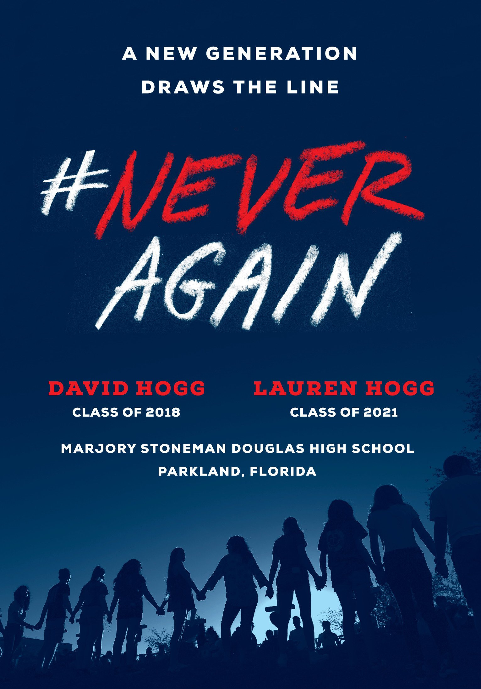

Reflection
I have a personal story about school shootings. Last September, while in the Toronto Pearson airport waiting to pass customs for my trip to New York , I was in line behind a group of teenage boys. They seemed like normal boys to me. They were talking about Toronto and making dumb jokes. Some were talking about university and their plans. A couple of them were talking about Tim Hortons. I glanced at one boy’s shirt; it had a message about gun violence. When I looked up at his face, I knew who he was. It was . He was a survivor of the Stoneman Douglas School Shooting.He was now an activist and an author.
I didn’t interact with him, as I thought it might be weird for an adult man to approach a group of teenagers at an airport, but this interaction stuck with me. These were just teens, who 6 months earlier, had to face a deadly school shooting. Personally, an event like that would be traumatizing for me. I can’t imagine what it must have been like for a teenager. This is why I personally agree with Michael Moore’s view on gun violence. This is why I disagree with the views of Charles Heston and the NRA. This is why I believe that we need to take more action. Such action can include focusing on bullying prevention and mental health awareness in the school or gun regulations among underprivileged communities. Either way, there needs to be more action. This movie was a great addition to the general public’s understanding of guns and gun laws. It is a great viewing and I think is a great resource for Americans and Canadians alike.